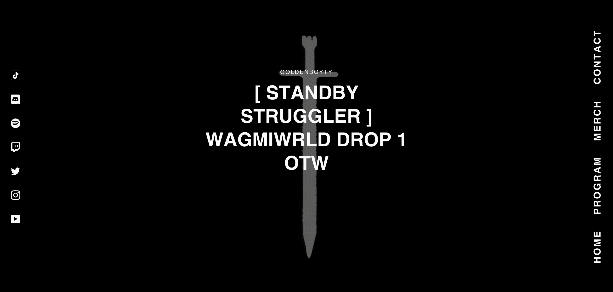
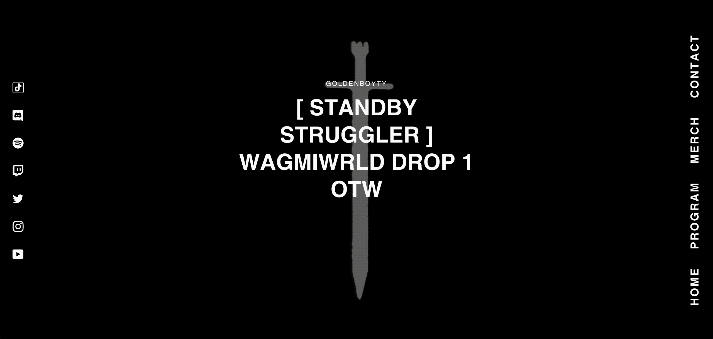

Overview
Fitness influencer GoldenboyTy had a goal of wanting to sell his goods and services to his fans. He reached out to me to help set up a website where he could achieve this goal. Having minimal experience with Shopify's Liquid syntax, this presented itself as a great opportunity for me to learn some new skills.
The page began with a free Shopify Theme called Narrative. It had the closest design we were looking for, as well as all the shop functionality we needed. From there, I utilized ThemeKit to allow myself to make code updates on my local IDE while being able to see the changes applied live to the site.
The theme was revamped with a new social media navigation bar on the left side of the page, navigation menu on the right side of the page, and any page content in the middle. A looping video is played in the background, as well as a rotating sword .gif on specific pages. The design as kept minimal and clean, with a dark/grungy aesthetic to match GoldenboyTy's brand.
Along with all the changes, any customizable features were also integrated into Shopify's Content Management System. This allowed GoldenboyTy to still freely adjust the new social media options, website colours for newly added text/blocks, and even switch the background videos without the need to reach out to me.
Skills Showcased: Liquid Syntax, ThemeKit Integration, HTML, CSS